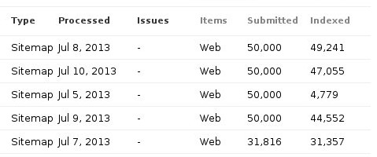

Make Large Collections of Information Pages Available to Google Using Sitemaps
by Kazimier Smith
2013/08/28
Introduction
Here at Mazira, one of the software platforms I helped develop was BondPDF, an online suite for managing large collections of financial bonds. One important feature of BondPDF is its public bond data pages, which allow users that know the ISIN (an identification number) of a bond to enter it as part of a URL and view publicly available information about the corresponding bond. These pages are generated automatically: a request to a URL containing an ISIN queries the BondPDF database and responds with the correct data. Many websites contain pages like this, especially those that contain large amounts of data.
OK, so wouldn’t it be useful if these huge databases were easily accessible via Google? Yes, but there’s a problem with these kinds of pages: there are no links to them from elsewhere on the site. In the case of BondPDF, there are hundreds of thousands of bonds with unique ISINs that could be displayed, so there cannot possibly be links to each one. This creates a major problem for Google’s “Googlebot,” which finds new pages by following links. Googlebot can’t access the pages, so they won’t show up on Google, which makes the database much less user friendly.
Sitemap Files
Fortunately there’s a solution to this common issue: sitemaps. Sitemaps are specially formatted XML documents that contain URLs. Sitemaps can be submitted to Google with Webmaster Tools. When Google receives a sitemap, Googlebot knows about the URLs contained in the sitemap, and knows to crawl those pages and add their information to Google’s search index (although Google doesn’t guarantee all URLs in a sitemap will be indexed). Sitemaps are a very useful way to inform Googlebot of URLs it might not find otherwise. And they are very straightforward to write up -- if you only have a few URLs you need added. But commonly, as I mentioned above, a site will have thousands of URLs that Googlebot couldn’t normally find. It would be very inefficient to write out all these URLs by hand, not to mention it wouldn’t update as new pages were added to the database. Fortunately, sitemaps follow a very strict structure that’s easy to replicate with a script. Let’s look into how to go about this.
I’ll be using Node JS for sitemap generation, but the process should be very similar in most languages. Let’s look at some code:
var HEADING = '<?xml version="1.0" encoding="UTF-8"?>\n\n';
HEADING += '<urlset xmlns="http://www.sitemaps.org/'
HEADING += 'schemas/sitemap/0.9">\n\n';
var count = 1;
// Some function that gets the information necessary to
// generate the URLs
var isins = getIsins();
var numSitemaps = Math.ceil(isins.length / 50000);
var output = new Array();
while ( count <= numSitemaps ) {
output[count - 1] = HEADING;
var i = 0;
for ( i = (count - 1) * 50000; i < ((count * 50000) >
isins.length ? isins.length : count * 50000); i++ ) {
output[count - 1] += '\t<url>\n\t\t<loc>' +
'http://www.bondpdf.com/bonds/';
output[count - 1] += isins[i] + '</loc>\n\t</url>\n';
}
console.log('count = ' + count + '; i = ' + i);
output[count - 1] += '\n</urlset>';
count++;
}
process.nextTick(function () {
callback(null, numSitemaps, output);
});
First we generate the main heading that begins the sitemap. It specifies the XML version, encoding, and sitemap protocol to use. Then we call a function that gets the information we need to generate the URLs. Next we set up a loop to go through all the information we need, and generate our URLs. One very important fact that adds a few odd things to this portion of the code is that that a single sitemap file can only contain 50,000 URLs. With BondPDF and certainly many other cases 50,000 is not sufficient for all the pages that need to be indexed. So the loop is designed to create an array of sitemap text that can then be written to individual files. Really it’s fairly simple code which shouldn’t be difficult to adapt to any type of variable URLs. One improvement I could implement with Node JS is to stream the information to avoid locking the database.
So now we’ve got several sitemaps generated that include a huge number of URLs, generated automatically. A script like this could be run at some specified interval to keep the sitemaps updated.
Sitemap Index Files
Now we have to submit the sitemaps to Google. But to avoid having to submit each sitemap individually, we can create a sitemap index containing the locations of each sitemap (they have to be uploaded somewhere on your site). A sitemap index is formatted very similarly to a regular sitemap (see here, at the “Using sitemap index files” section). When the sitemap index is submitted, Google automatically submits the sitemaps it contains. Sitemap indices are fairly simple; let’s look at how we can automatically generate one.
var generateOutput = function (files, callback) {
var output = '<?xml version="1.0" encoding="UTF-8"?>\n\n';
output += '<sitemapindex xmlns="http://' +
'www.sitemaps.org/schemas/sitemap/0.9">\n\n';
for ( var i = 0; i < files.length; i++ ) {
output += '\t<sitemap>\n\t\t<loc>' +
'http://www.bondpdf.com/sitemap_files/' + files[i] +
'</loc>\n\t</sitemap>\n';
}
output += '\n</sitemapindex>';
callback(null, output, files.length);
};
Again, we generate a header, and then write each file passed to the function to a line of XML. As above, this script could be run from time to time to keep things up to date.
Conclusion
Now that you’ve got your sitemap index, just go to Google Webmaster Tools, submit it, and wait. Be patient; depending how many URLs you submitted, it can take several weeks or even longer for Google to get all the URLs indexed. But you can easily view the progress with Webmaster Tools.

We've now made a large collection of poorly-linked pages available to Google, and thus more available to users.